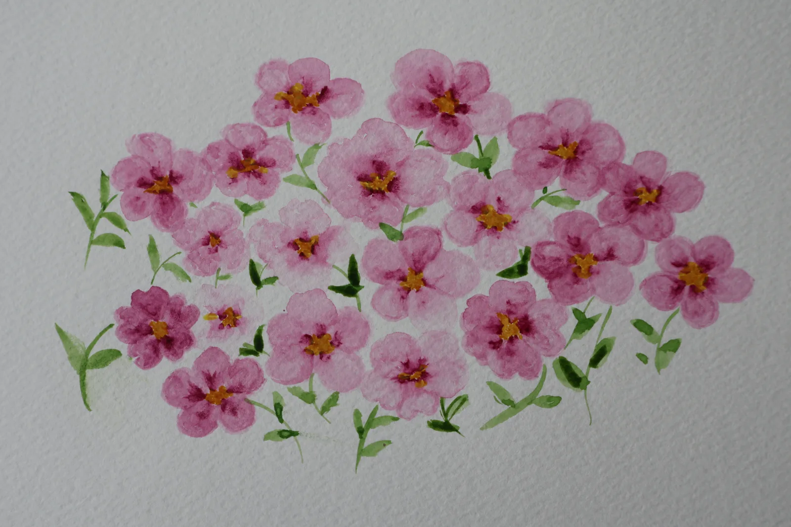
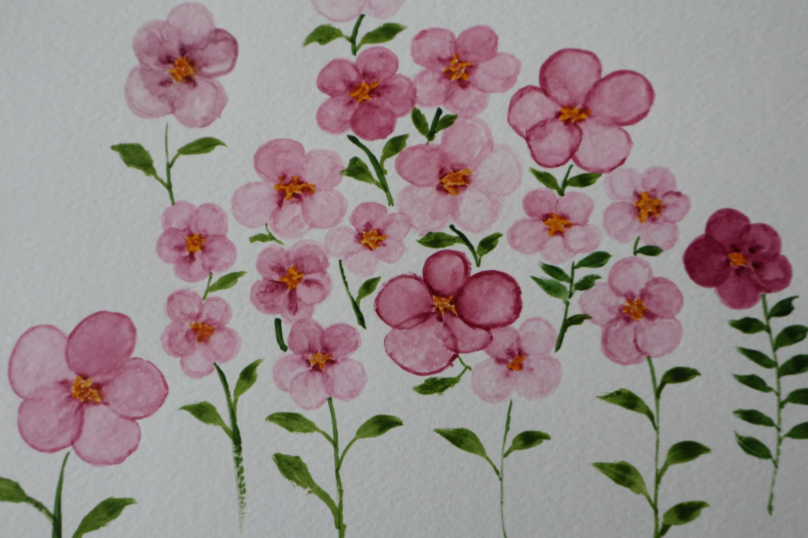
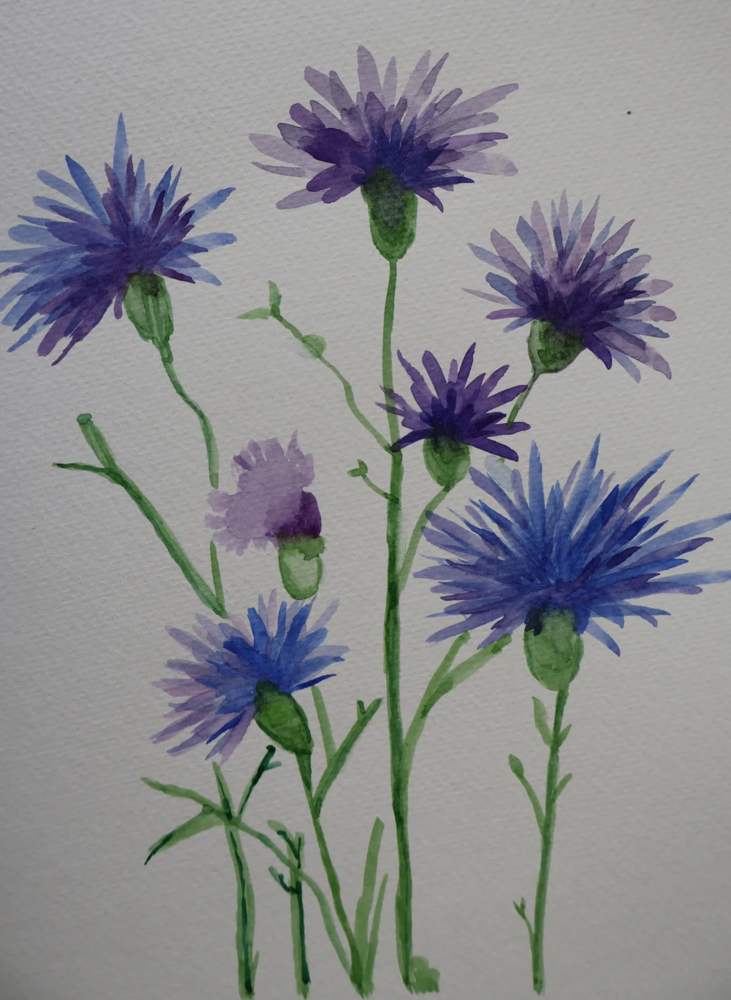
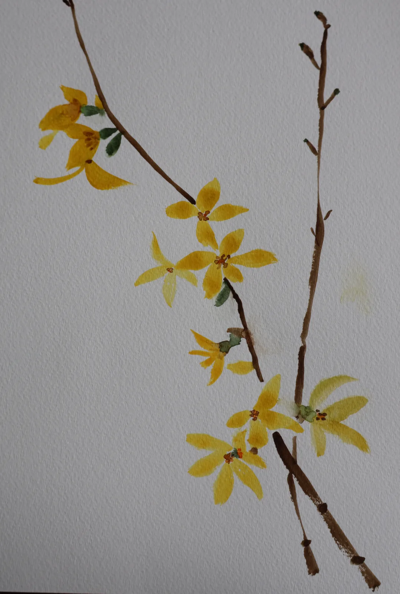
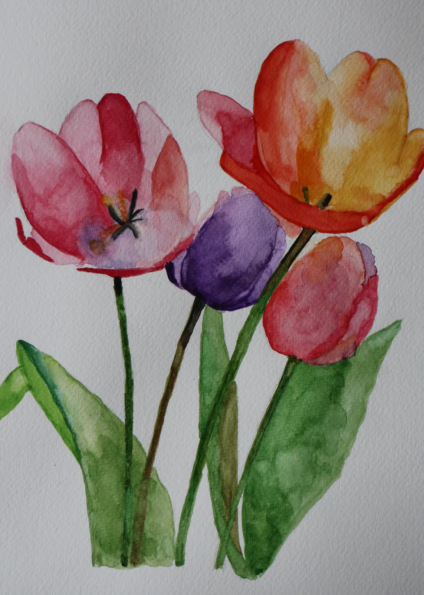
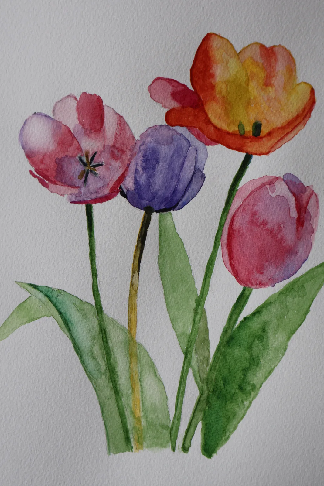
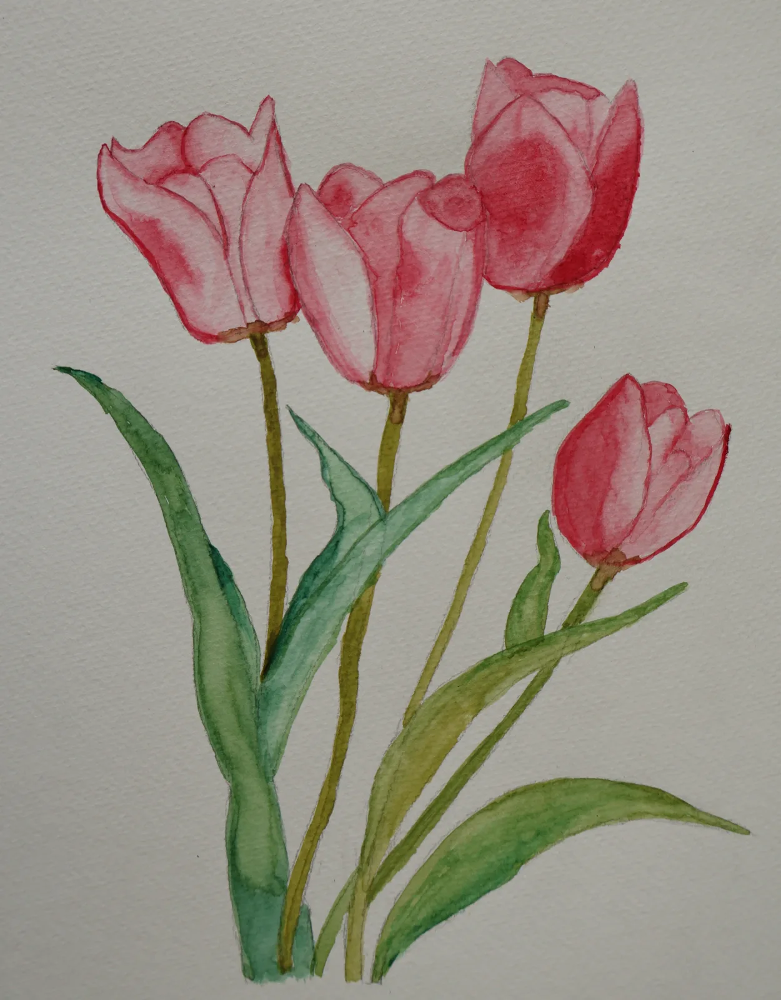

A Spring Collection
Still Life— in bloom —
A small, quiet study of petals, light, and the patience of looking. Seven works, gathered for the season.

Azalea, Morning Window
Plate I · 13 May 2026

Azalea, Afternoon Study
Plate II · 13 May 2026

Cornflower, A Field Note
Plate III · 13 May 2026

Forsythia in Quiet Light
Plate IV · 13 May 2026

Tulip, First Posture
Plate V · 13 May 2026

Tulip, Bending Toward Evening
Plate VI · 13 May 2026

Tulip, A Closing Note
Plate VII · 13 May 2026